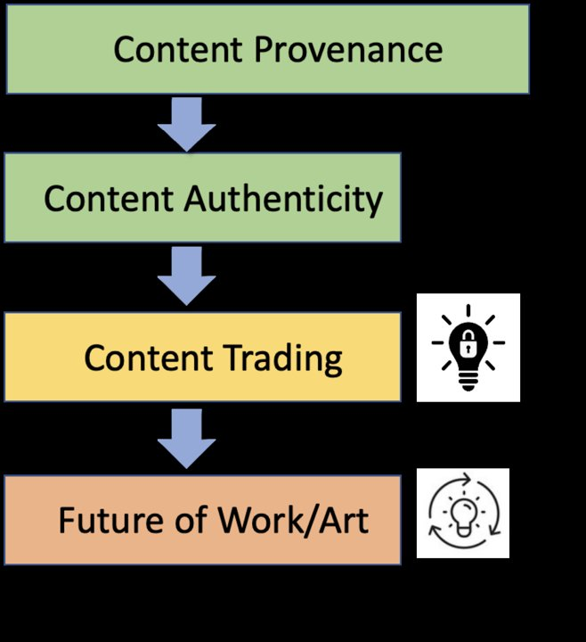

Content Provenance
Content provenance is information on the creation, authorship, and editing of a digital asset. Content Credentials carry this as metadata with cryptographic means to verify it is unchanged. But what happens when platforms strip the metadata? Durable Content Credentials unify three pillars — metadata, invisible watermarking, and image fingerprinting — so that credentials stay permanently attached and are safeguarded against spoofing.